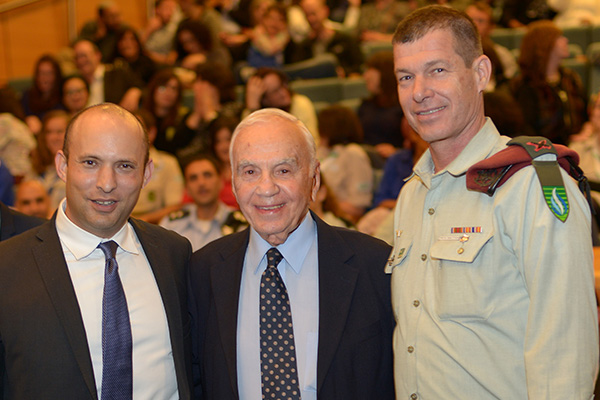
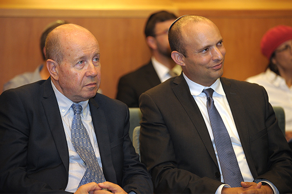

On November 2, 2016, the fellows of the Mandel School for Educational Leadership and the Mandel Leadership Institute gathered at the Menachem Begin Heritage Center in Jerusalem to mark the completion of their studies. The event took place in the presence of Mr. Morton Mandel, chairman and CEO of the Mandel Foundation, and MK Naftali Bennett, Minister of Education and Minister of Diaspora Affairs.
Speaking to all those assembled,
Education Minister Naftali Bennett emphasized the need to reduce the gaps in education between the center of the country and the periphery: “A child born in Ofakim goes out into the world at age 18 with much lower chances of success than a child born in Ramat Hasharon, even in Israel in 2016,” he said. “All of you, together with all of us, must correct this situation.”
In his address to the graduates,
Prof. Jehuda Reinharz, president of the Mandel Foundation, emphasized the Mandel Foundation’s commitment to values-based leadership training. This commitment to values is what explains the Mandel Foundation’s “unique contribution to the advancement of the study of humanities as the foundation of human aspiration and human experience,” he said. “There are plenty of leadership training programs that will provide tools for effective management, in almost total detachment from the sphere of ethical values,” he continued.” The connection between these two is the core of what we do.”

Twenty graduates of Cohort 23 of the
Mandel School for Educational Leadership, a joint initiative of the Mandel Foundation and the Ministry of Education founded in 1991, marked their completion of two years of study, during which they grappled with central issues in education, leadership, and Israeli society.
“We all hope that the many seeds you planted during the two years you spent with us will sprout, grow, and bear fruit. We hope that your ability to do good has only expanded and improved,” said
Danny Bar Giora, the director of the School. “Through the activities of the Mandel Graduate Unit, we will continue to support you throughout the course of your professional life… My wish for you, and for our country, is that you succeed in your work and bring much good to the world. Remember that there is a great task that we are all charged with and that we all share: advancing education in Israel, in order to contribute to a healthy Israeli society.”
“For me, the human mosaic created here, in spite of all the differences between us, represents the diverse and special nature of Israeli society as we would like to see it,” said
Mevasseret Jacobs, speaking on behalf of the School’s new graduates. “Each one of you individually, and all of you together, have added to the beam of light that illuminates the way. You have helped me better understand not just my own place, but also the broader picture of the Israeli education system, which despite all its problems, is diverse and colorful, and inspires hope.”

Also concluding their studies were graduates of the Mandel Leadership Institute: the fellows of Cohort 2 of the Institute’s Mandel Program for Leadership Development in the Haredi Community, the first cohort of the Mandel Program for Educational Leadership in the Youth Movements, and 20 senior officers from the Israel Defense Forces who completed their studies in the Mandel IDF Educational Leadership Program. “There is so much diversity in one place, and yet so many similarities,” said
Dr. Eli Gottlieb, director of the Mandel Leadership Institute and vice president of the Mandel Foundation–Israel. “People come from different places, with different hopes and dreams, but they all share the same aspiration of creating a future that is better, fairer, and more just for all Israeli children.”
”From the very first cohort,” said
Morton L. Mandel, chairman and CEO of the Mandel Foundation, “we did manage to do one thing… with extreme success: to recruit fellows or participants of very high quality… We knew that
it’s all about who, and that the secret is in the people.” He expressed his pride at being part of a process that helps high quality people be even more successful in their efforts to improve quality of life and make the world a better place.
{kind=link}
{kind=link}